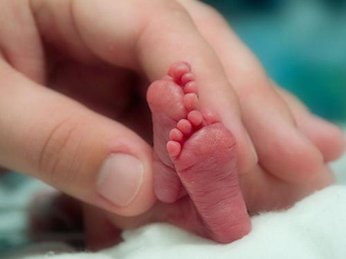

III. REALITY
Current status of adolescent abortion in our country:
Adolescents (10-17 years old) in our country have about 23.8 million people, accounting for 31% of the population. According to statistics of the Family Planning Association, Vietnam is one of the three countries with the highest abortion rate in the world (1.2-1.6 million cases per year), of which, 20% are in the middle age group. adults, even a 12-year-old child. The national survey on adolescents and young adults in Vietnam found that 7.6% of this age group had premarital sex. Juvenile abortion occurs in almost all provinces and cities in the country, not just any locality. However, it happens a lot in big cities such as Hanoi, Ho Chi Minh City, Hai Phong, Quang Ninh... in big cities with developed socio-economic conditions, children have the opportunity to interact with Social media should also hit puberty earlier than their peers in rural areas, on the other hand, this is also the place where many universities, colleges, intermediate schools and industrial parks are gathered. Children living far away from home lack the love and attention of their families, so they easily drift into friendships and love relationships and leave unwanted consequences. In the first 6 months of 2008 alone, the country had 432,000 abortions among teenagers, of which, Tu Du Hospital - Ho Chi Minh City had 19,752 abortions, and Hanoi 11,634 cases. Statistics from health authorities, 2008 Reproductive Health Survey). That is not to mention a lot of abortions in private medical facilities but cannot be controlled and statistically. BS. Lam Thi Thu - An Giang Center for Maternal Child Health Protection and Family Planning, said: "Among the cases of going to the center to relieve "consequences", 10-16% are under 19 years old and unmarried. In many cases, not only one abortion but many times, at most, the pregnancy is about 2 months old. Obstetricians always keep in mind that conventional abortion is only used for force majeure cases. Because the immediate complications caused by abortion are likely to occur such as: bleeding, infection, retained placenta, uterine perforation, fallopian tube blockage, bladder tear, blood infection and possibly death, especially those in the case of pregnant women between the ages of 13 and 15. Further consequences are that they will be at risk of: pregnancy toxicity, miscarriage, premature delivery, eclampsia, prolonged labor, severe trauma to the genital tract, sometimes requiring caesarean section or excision. vulva to get pregnant. If you keep the pregnancy, it is easy to face the risk of fetal toxicity, hypertension, anemia, premature birth and placenta previa.
Causes of adolescent abortion in our country
The cause of the increase in the number of abortions in adolescents and young people today is because this age group is in the period of psycho-physiological changes, the biological and physiological functions of body gradually changes. The need to be in contact with the opposite sex is always high, while the experience in solving physiological and reproductive needs is limited, and adults lack close attention. Therefore, it is easy for them to have erroneous thinking, self-exploration, discovery, and settlement of their physiological needs, indiscriminate sexual intercourse which is always latent. Through research before the procedure, doctors at the Family Planning Department of Tu Du Hospital found that the rate of knowledge about sex among adolescents was not high. There are still too many children with very vague knowledge about gender, no knowledge about pregnancy and contraceptive methods when having sex. There are still many children who think that having sex once will not leave any consequences. This is the reason why the abortion rate among teenagers is increasing year by year. Most parents, especially parents in rural areas, are still afraid when their children have questions or when sharing issues about gender with their children. Even many people think that this is a "delicate" issue that needs to be "kept" with their children, some people avoid or educate in an inadequate and methodless way. Many parents still mistakenly think that: Telling such things to their children is like "drawing a way for deer to run", only making them vulnerable. This is the main reason why minors lack knowledge and understanding, self-search and research in unhealthy materials such as the dark web, tapes, etc., leading to false understanding, misconceptions in love and sex, not knowing how to protect and take care of yourself. Meanwhile, the age at which they are most likely to get entangled in love affairs is also at the age of schoolchildren and students, many of them are middle and high school students but already have lovers and boyfriends. But until the children have "cohabited", "something happened" and then frantically tried to "educate" them, it is too late, just like "losing a cow to build a barn", not only is it easy to cause damage. hurt them, but also leave incalculable consequences. Starting an "adult" life when they are not mature enough while still attending school not only affects their education but also is the main cause of unwanted pregnancy and indiscriminate abortion.

Consequences of teenage abortion
There are many people who think that with the current level of medicine, abortion will not affect anything. It is true that medicine now has quite safe methods of implementation. However, as we all know, even under the best conditions, abortion also carries a certain risk of complications and complications, which are influenced by many factors, including age. pregnancy and maternal age. The older the gestational age, the higher the risk of complications. If the period is less than 2 weeks late, only the abortion procedure is needed and the complication rate is low; But if the period is delayed for longer, from 2 weeks to 2 months, the abortion procedure must be performed; And if the period is more than 2 months late, it is necessary to give birth prematurely, with a very high rate of complications. Possible complications of an abortion include bleeding, uterine perforation, and prolonged infection that can result in hysterectomy. In addition, of all the methods of pregnancy management, if performed safely without immediate complications, there can still be long-term consequences, including difficult births. due to low adhesion, placenta previa ... including the possibility of infertility if you abuse abortion. One thing to add, is that teenage abortion has many potential risks. Firstly, at the age of children, the genital organs are not fully developed, so there are often more complications. In addition, they are often afraid that adults know they should go to private facilities, even illegal ones, that have no function and are not qualified to perform the procedure safely. As a result, the accident rate is high, even with many case of death. There are many children, because they are too afraid, so after having an abortion at these places and having complications, they do not dare to report it, until it is too severe to go to the hospital, they have to remove the uterus. It should also be added that in adolescence, if girls become pregnant and give birth, the risks such as premature birth, birth complications and mental retardation are many times higher than that of adult women. A study in Matlab, Bangladesh showed that the maternal mortality rate at the age of 10-14 years was 10 times higher than that of the age group 20-24, and the maternal mortality rate at the age of 15-19 was high. 2 times higher than the age of 20-24. In Vietnam, nationwide statistics show that the risk of maternal death of mothers under 20 years old is 5 times higher than that of mothers giving birth at the age of 24 – 25. Children born to teenage mothers also die 40% more in the first year of life than children born to mothers in their twenties. The number of children under 15 years old with sexually transmitted diseases accounted for 1.16% (for gonorrhea) and 1.5% for other dermatological diseases. Children who are assigned to give birth, in addition to the risks of pregnancy toxicity, miscarriage, preterm birth, abnormal position, also have the risk of eclampsia, prolonged labor, severe trauma to the genital tract, often requiring caesarean section. or cut open the vulva to remove the fetus. In some cases, due to the large fetus, the pregnant woman's body is not fully developed, so the removal of the fetus has permanently robbed them of their ability to become a mother in the future. And keeping the pregnancy can lead to the risk of fetal toxicity, high blood pressure, anemia, preterm birth and placenta previa. Adolescent mothers often don't complete school, babies are born with low birth weight, tend to be less educated, and are more likely to be abandoned or abused. Up to 13% of the sons of teenage mothers are more likely to go to prison and 20% of the parents are inclined to become young mothers like their mothers.
SOLUTIONS
Adolescents account for 30% of the population of our country, an age with many physiological and psychological changes, have many questions about the development of the body as well as need answers and support from adults and children. professional documents. However, in reality, in our country, reproductive health education for adolescents is still limited. From the analysis of the above causes and consequences, the most important thing, for both girls and boys, is to do everything possible to avoid “this situation”. In particular, unmarried adolescents and young adults must limit sexual intercourse, especially avoiding "risky" situations that can lead to "unexpected" relationships such as secluded places. just the two of you, especially when it comes to drinking. Second, if men have uncontrollable emotions, women must firmly refuse, not yielding to your urges and your feelings. It's better to lose heart a little bit than to pay the price for your impatience. Refusing to "touch" does not mean no love, but also an important factor in protecting love. Thirdly, if it is "missed", then the woman needs to take the birth control pill after intercourse as soon as possible within 72 hours, take 2 pills, 12 hours after the first pill. Remember, this is a medicine only used in "emergency" cases and should not be abused as a contraceptive because it can cause menorrhagia and heavy bleeding. And if the "missing thing" has passed 72 hours, the woman must pay close attention to the menstrual monitoring to detect early signs of pregnancy such as missed periods, nipple tightness, etc., and take early measures to solve it. Fit In order to prevent abortion in the teenage years is no longer a painful problem, so that no more minors and their families have to bear the pain, it is necessary to educate adolescents on reproductive health in a way that Timely and effective is not only a necessary job, the responsibility of parents and schools, but also the best "prevention remedy". Need a specific education strategy: According to experts in the field of family planning, early puberty due to improved living conditions along with permissive views about sex are the leading causes of the abortion rate among teenagers. higher. Meanwhile, the issue of sex education has not been paid enough attention by parents as well as educators and social managers. Many parents think that education Gender, sex is "drawing the way for deer to run", and educators say that it is a delicate, private, not serious issue that is difficult to present on the podium... For these reasons. , so far, we still have many difficulties or rather "keep our mind" on this implicitly considered "delicate" issue. From the point of view of obstetricians as well as psychologists, contraception should be applied to adolescent girls. Because premarital sex among young people today is increasingly common and out of control. In foreign countries, in the concept of education about sex, the concept of "safety" for them, in addition to the problem of disease, also includes not having an unwanted pregnancy. As for us today, "safe" is when our child does not "have sex" at all, is this still a correct and trendy concept? Or is it just rigid and will continue to contribute to "maintaining" as a result, the situation of adolescent abortion is still a matter of "know, miserable, say it all the time"... Maybe until now , no one doubts the need to bring sex education knowledge into schools. As adults, let's pay more attention to the children, let's create a healthy sexual culture environment for them, a correct perception of sex with two functions: satisfying the human need for happiness. and maintain the breed. It is necessary to implement many propaganda programs on reproductive health care focusing on junior high schools, high schools, colleges and universities, open communication classes on reproductive health care at universities and colleges. at the same time, establish Adolescent and Youth Clubs at these schools for regular and effective communication and learning about adolescent reproductive health care. Developing models such as: "Friendly corner" comprehensive reproductive health care and education for rural youth; Training for parents of teenagers. In addition to the above measures, it is necessary to prevent the risk of concealed abortion. A practitioner who does not have a license in law is called illegal abortion, in medicine, it is called unsafe abortion because these facilities are not sterile, do not have enough professional equipment, ordinary people Without training, or even with training, working in an unauthorized facility is dangerous because of the lack of aseptic and resuscitation conditions. In these settings, they may use unscientific measures such as inserting an herb stick to dilate the cervix, or using homemade instruments that cause infection and serious injury. Due to lack of technology and facilities, concealed abortion is easy to miss or have complications. Because many people also want to hide, when it is discovered to handle the exam, it is too late, many gases lead to tragic consequences. From having to change the whole society's perception of the issue of illegitimate pregnancy to laws that allow the termination of unwanted pregnancies easily, decentralization of technical facilities so that people in need can be easily, discreetly, removed facilities, facilities, skills training for employees to ensure safety, free or low fee in accordance with the ability of the majority.
- In the multifaceted efforts to combat unsafe abortion, attention should be paid to:
- Educating the public about the dangers of unsafe abortion, the importance of measures to prevent unwanted pregnancy, and the ease of accessing state-approved active abortion clinics. - Provide accessible and acceptable family planning and counseling services to prevent unwanted pregnancy.
- Expanding emergency treatment service facilities for all complications caused by curettage.
- Providing high quality services for termination of pregnancy with legally authorized indications, simple and easy admission procedure.
- Donec nulla non metus auctor fringilla.
- Contraceptive methods: where to get, how to use? Early signs of pregnancy
- The dangers of unsafe abortion
- Where and how to terminate the pregnancy. Places and means to convey the above information can be medical facilities, high schools and universities, newspapers, magazines, counseling centers... and especially women directly. Ask family members such as mother, grandmother, sister, sister-in-law. Because they are the most responsible and loving people for me.
- Donec nulla non metus auctor fringilla.
In terms of religion and spirituality
There is not a single Buddhist view regarding abortion. Some traditional sources, including some Buddhist monastic rules, hold that life begins at conception, and that subsequent abortion will involve the willful destruction of life, so abortion is forbidden. Refusal. Complicating matters is the Buddhist belief that "life is a continuum with no definite beginning". Among Buddhists, there is no official or preferred position regarding abortion. The Dalai Lama has said that abortion is "negative", but there are exceptions. "I think abortion should be approved or disapproved on a case-by-case basis," he said. Abortion or otherwise inducing abortion is considered a serious matter in the monastic rules followed by Theravada and Vajrayana monks; Monks and nuns must be kicked out of the monastery if they have assisted a woman in an abortion. Traditional sources do not recognize the difference between early and late abortion, but in Sri Lanka and Thailand , the "moral stigma" associated with abortion grows with the development of the fetus. While traditional sources do not seem to be aware of the possibility that abortion is related to the health of the mother, modern Buddhist teachers from many traditions - and abortion laws in many Buddhist countries - publicize the possibility of abortion. Accepting a threat to the mother's life or physical health as an acceptable justification for abortion is a matter of fact, although it can still be seen as an act of negative moral or karmic consequences.